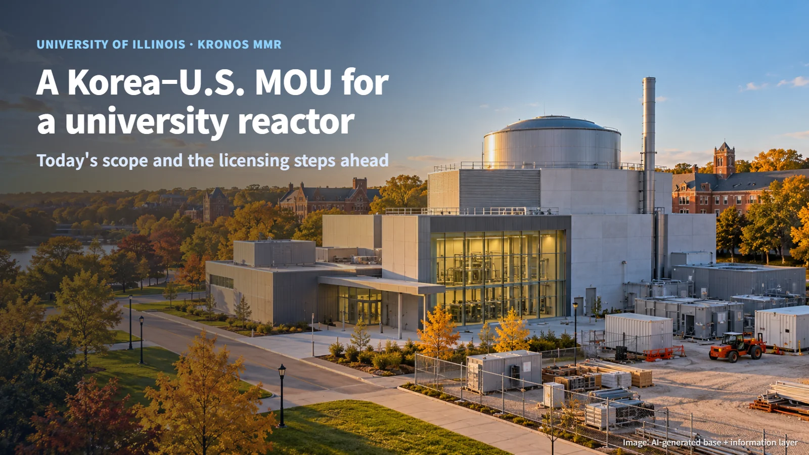
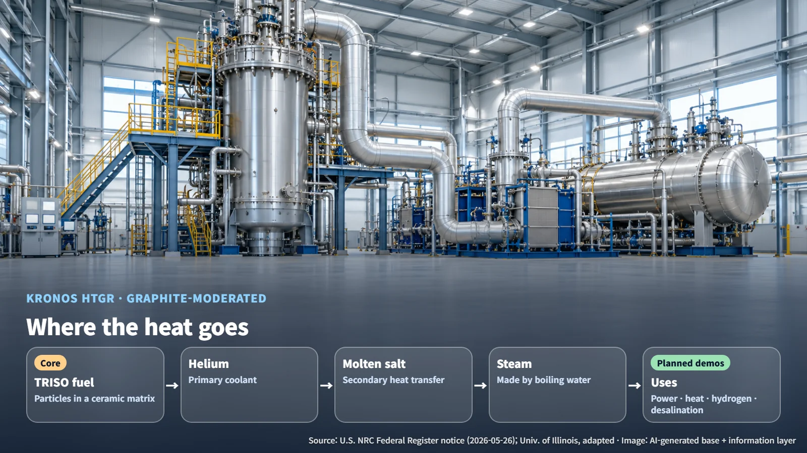
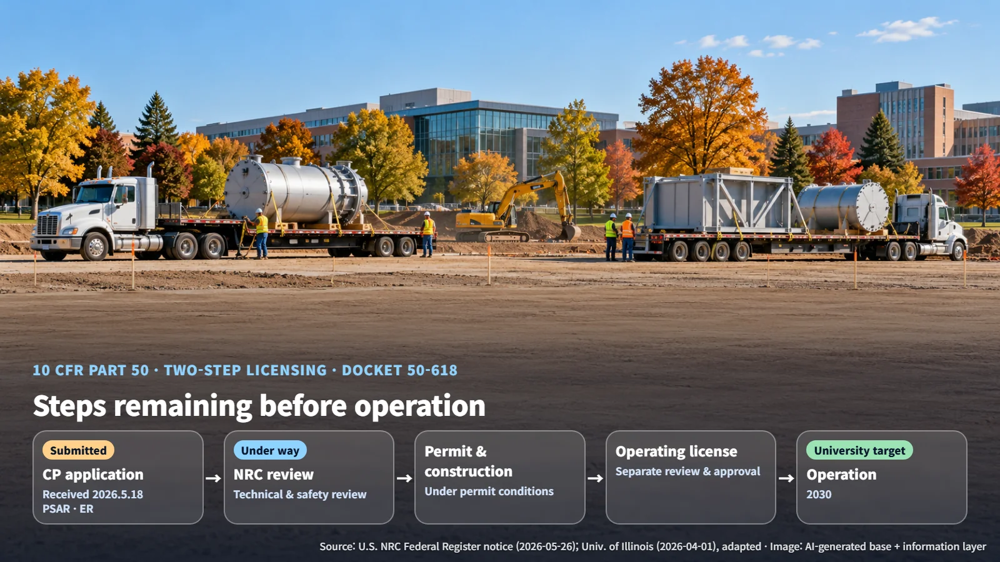

United States · Korea · Research Reactor
Hyundai Engineering Joins a U.S. University Reactor Project: Reading the KRONOS MMR Memorandum
NANO Nuclear Energy and Hyundai Engineering have agreed to prepare execution of the University of Illinois KRONOS MMR, whose construction permit application is under NRC review.
When a Korean engineering company signs on to a small reactor project at an American university, two questions come up first: what exactly will the company do, and when will the reactor be built? This post walks through the cooperation announced on October 27, 2026, and the licensing steps that remain before the reactor can operate.

What the MOU Sets Out: The Initial Scope of Cooperation
On October 27, NANO Nuclear Energy of the United States and Hyundai Engineering of Korea announced a memorandum of understanding (MOU) to prepare for execution of the KRONOS MMR (Micro Modular Reactor) project at the University of Illinois Urbana-Champaign (UIUC). The initial scope of cooperation covers general facilities and site construction, procurement readiness, constructability, modularization, logistics, and building a U.S. domestic supply chain. A constructability review checks whether the designed equipment can actually be installed and assembled in the field. Modularization decides, together, which units are built in a factory and which units are shipped and assembled on site.
The first deliverable the two companies plan to produce is essentially a division-of-labor chart. They will form working teams and prepare a preliminary responsibility and interface matrix that defines project packages, design and procurement boundaries, and scopes that have yet to be assigned, as the basis for future contracts. On the supply chain side, they will review supplier identification and prequalification, planning for long-lead items, a Korea–U.S. supply chain map, and plans for U.S. localization and manufacturing facilities.
The current stage, then, is preparation to settle who will do what. The MOU is a non-binding, non-exclusive framework for cooperation, and any paid work will be set out in separate definitive contracts between the appropriate contracting parties.
Where the Heat Goes: From Helium to Molten Salt to Steam
The KRONOS research reactor is a high-temperature gas-cooled reactor (HTGR). Its fuel is TRISO particle fuel: tiny fuel kernels wrapped in several coating layers, with the particles held inside a ceramic matrix. The coolant is helium, and the moderator (the material that slows neutrons so that fission occurs more readily) is graphite.
Heat moves through the plant like a relay. Helium heated as it passes through the core hands its heat to a molten salt secondary system, and that heat boils water to make steam. The NRC notice describes district heating and power conversion functions, and the university plans demonstrations of hydrogen production, desalination, and a microgrid. In sequence: TRISO fuel → helium → molten salt → steam → electricity, heat supply, hydrogen, and desalination.
Every baton pass in this chain has conditions that must line up. The temperature, pressure, and flow of the heat leaving the reactor side must be matched by the secondary system and by the buildings and equipment that house it. That is why the general facilities and site work proceeds in close step with the reactor design information.

The University Holds the License, Partners Carry Out the Work: Construction Permit Review and Roles
According to a U.S. Nuclear Regulatory Commission (NRC) notice published in the Federal Register on May 26, 2026, UIUC is the applicant for the research reactor construction permit. The application was received on May 18 and assigned docket number 50-618, and detailed technical review and safety evaluation are under way. The application has three parts: general information under 10 CFR 50.33, a Preliminary Safety Analysis Report (PSAR) under 50.34(a) covering design and safety functions, and an Environmental Report (ER) under 51.56 covering the site and environmental impacts.
The university has chosen the two-step path under Part 50. It first obtains a construction permit and builds under the permit conditions; operating the reactor then requires a separate operating license review and approval. In an April 1, 2026 announcement, the university said that during the pre-application readiness assessment it provided the NRC with draft versions of 18 PSAR chapters and 6 ER chapters. In effect, the university gained a chance to hear the regulator's early comments and reflect them in the formal submission.
The publicly described roles of the four parties are:
- UIUC: construction permit applicant for the research reactor, responsible for the submitted documents
- NANO Nuclear: reactor technology and development
- Hyundai Engineering: initial cooperation on general facilities, site, and procurement readiness
- NRC: technical review and decisions on permit conditions
(Source: NANO Nuclear announcement and NRC Federal Register notice, adapted)
The university, as applicant, carries responsibility for the licensing documents, while the partners turn its design basis into concrete plans for facilities, procurement, and construction.
The Next Milestones: Role Matrix, Definitive Contracts, and Review Progress
Hyundai Engineering's current scope is general facilities, site, procurement readiness, constructability, modularization, and logistics. According to the announcement, its future role could expand to A/E (architecture and engineering), EP (engineering and procurement), EPC (engineering, procurement, and construction), construction management, fabrication support, and fleet support. The conditions for that expansion are technical and commercial evaluation, available scopes of work, university and regulatory requirements, and definitive contracts. Today the arrangement is a framework for evaluating and defining roles, and paid work will be set through definitive contracts.
The reactor schedule is presented as the university's target. In its April 2026 announcement, the university cited a target of operation in 2030 and preparations for an operating license application. Calculating 2030 − 2026 gives roughly four years to complete the construction permit decision, construction, and the operating license application and review. Actual construction and operation dates will be updated according to NRC review decisions and project execution conditions.

Three points are worth watching: finalization of the two companies' role matrix, signing of definitive contracts for paid work packages, and progress in the NRC review toward a construction permit decision. When these three come together, the outline of the work a Korean company will carry out on the KRONOS MMR project will come into clear view.